Todo lo que te recuerda sus primeros días, conservado para siempre.
Su manito. Su piecito. Su fotografía. Sus datos de nacimiento y, si quieres, esos pequeños tesoros que guardaste desde que llegó a tu vida.
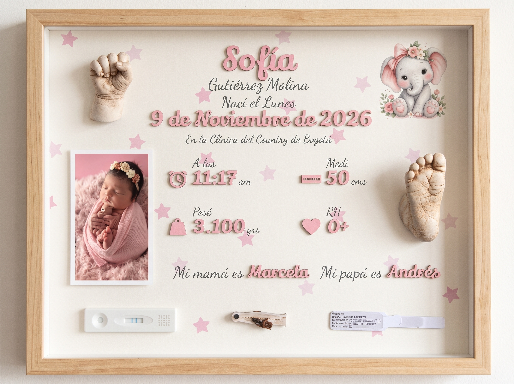
Merecen algo mejor que un cajón.
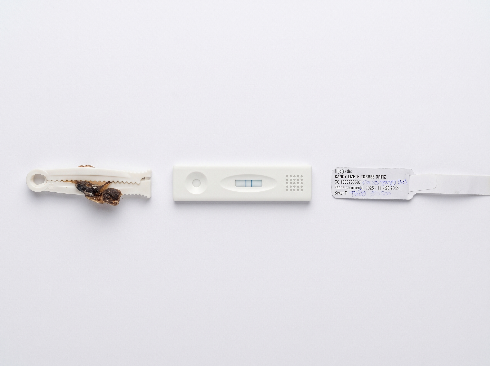
Objetos de enorme valor emocional que muchas veces quedan olvidados en un viejo cajón.
Y es completamente opcional. Puedes incluir los recuerdos que tengas, elegir solo uno o dejar el cuadro sin ellos. ¡Tú decides!
Todo comenzó cuando nació nuestro hijo.
Queríamos conservar para siempre sus manitas, sus piecitos y esos pequeños recuerdos de sus primeros días, pero no encontrábamos cómo reunirlos de una forma realmente especial.
Así nació Familia Real. Durante años ayudamos a otras familias visitándolas en sus casas para tomar las impresiones. Era precioso, pero coordinar una visita no siempre era fácil: a veces pasaban semanas sin lograr agendar y la entrega podía tardar cerca de 30 días.
Por eso buscamos una nueva manera de hacerlo. Hoy podemos partir de fotografías tomadas con el celular, recrear cuidadosamente las formas en 3D y llevar el recuerdo hasta tu casa en mucho menos tiempo.
Porque hay detalles que hoy sabes de memoria… y algún día querrás volver a recordar.
La fecha. La hora. Cuánto pesó. Cuánto midió. El lugar donde nació. Pequeños datos que marcan el comienzo de una vida y que, dentro de Familia Real, dejan de ser números para convertirse en parte de su historia.
Por eso no solo conservamos cómo se veía. También conservamos cómo empezó.
Y sí: ahora podemos hacerlo desde una fotografía.
Combinamos modelado asistido por inteligencia artificial, impresión 3D de alta precisión y acabado manual para recrear cuidadosamente las formas y detalles de su manito y su piecito.
Las dudas más importantes, resueltas antes de empezar.
Trabajamos a partir de las fotografías de tu bebé, no de una mano genérica. Antes de producir revisamos personalmente que las imágenes permitan obtener el detalle que buscamos.
No necesitas saber de fotografía. Te enseñamos exactamente cómo tomar la palma y la planta. Si alguna imagen no sirve, te lo decimos antes de producir y te ayudamos a repetirla.
No. Dejamos preparados los espacios dentro del cuadro y te enviamos el pegante y una guía sencilla para que puedas colocarlos fácilmente en tu casita. Así no te arriesgas a perder algo tan valioso.
Tu recuerdo pasa por nuestras manos antes de llegar a las tuyas.
Queremos que el resultado final esté a la altura de algo tan importante como los primeros recuerdos de tu bebé.
Familias que ya confiaron en Familia Real.
Más de 400 cuadros después, estos mensajes siguen siendo nuestra parte favorita.
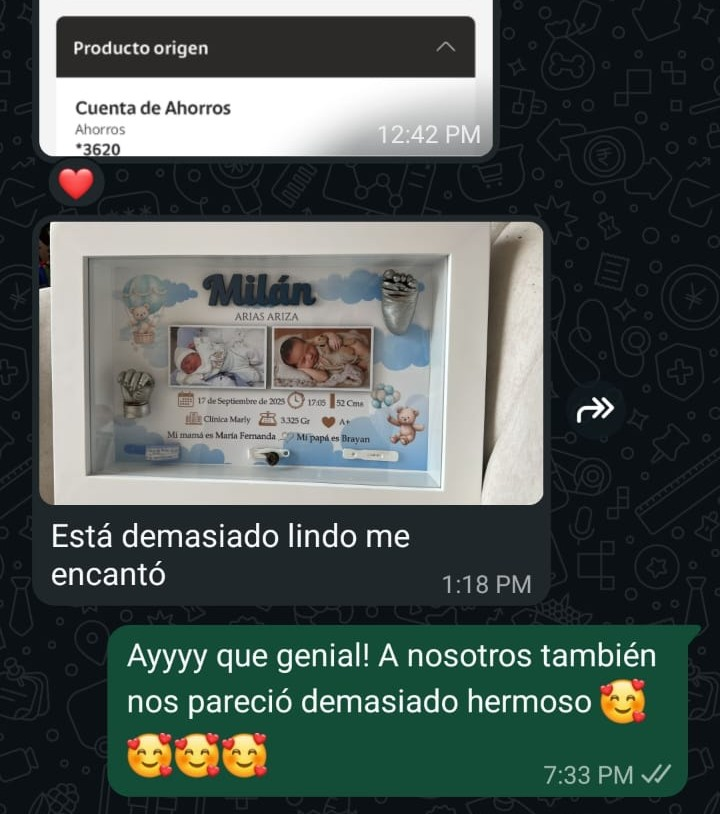
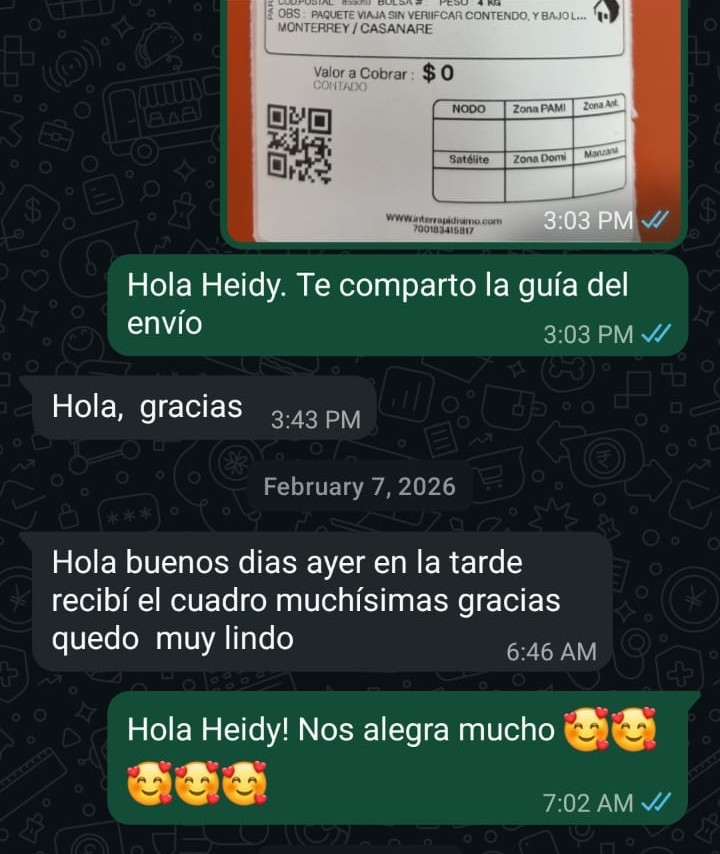
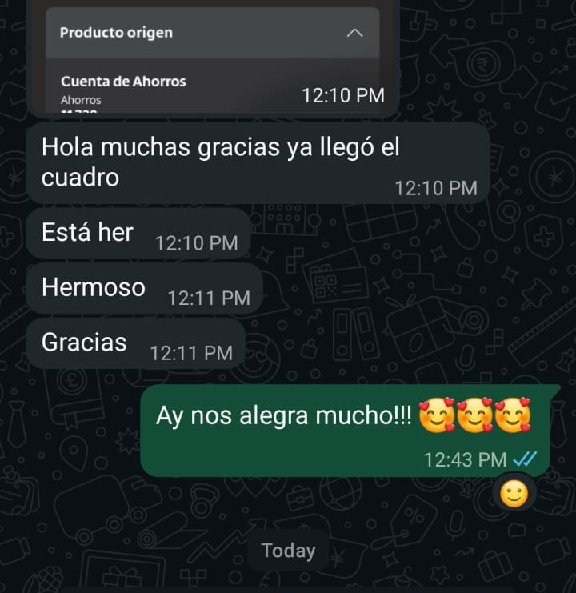
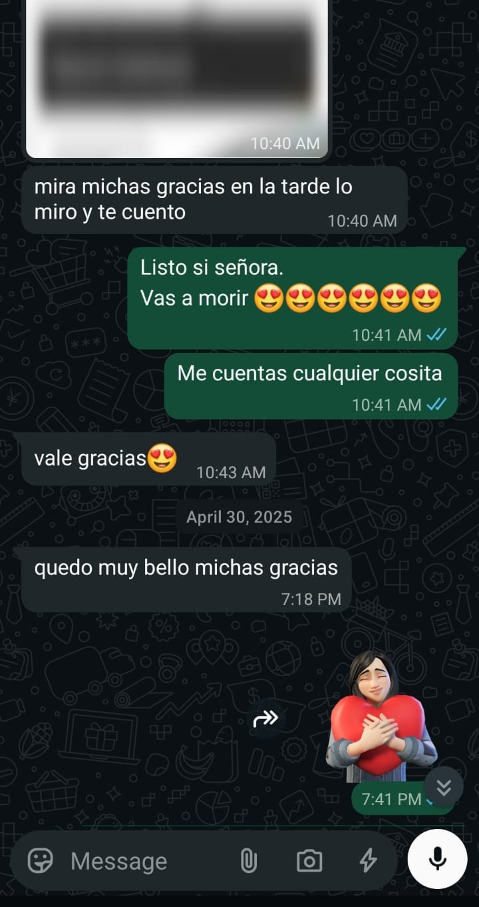
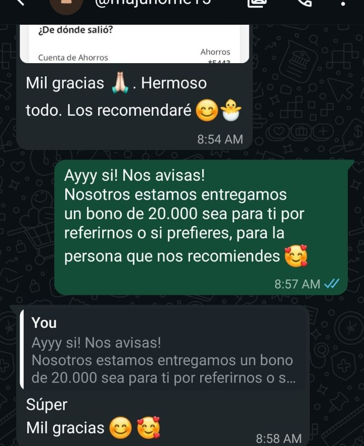
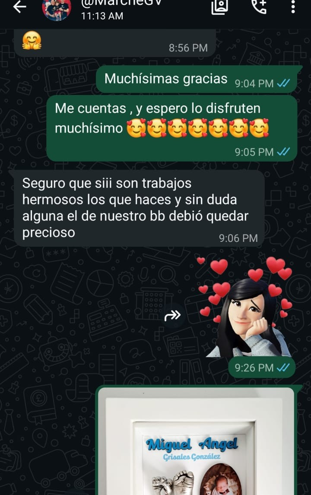
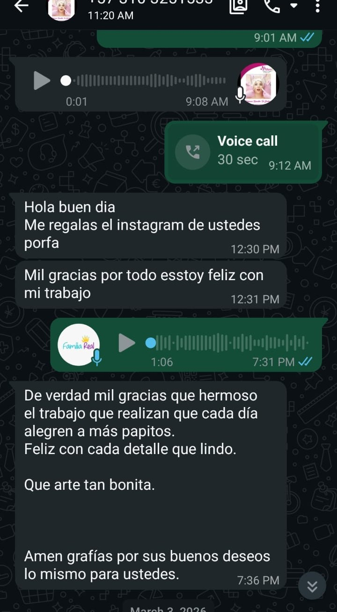
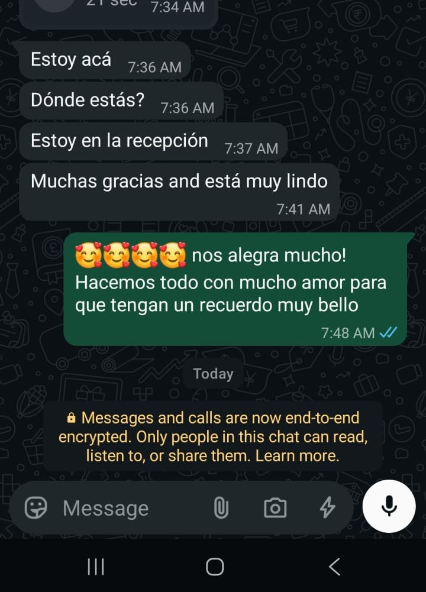
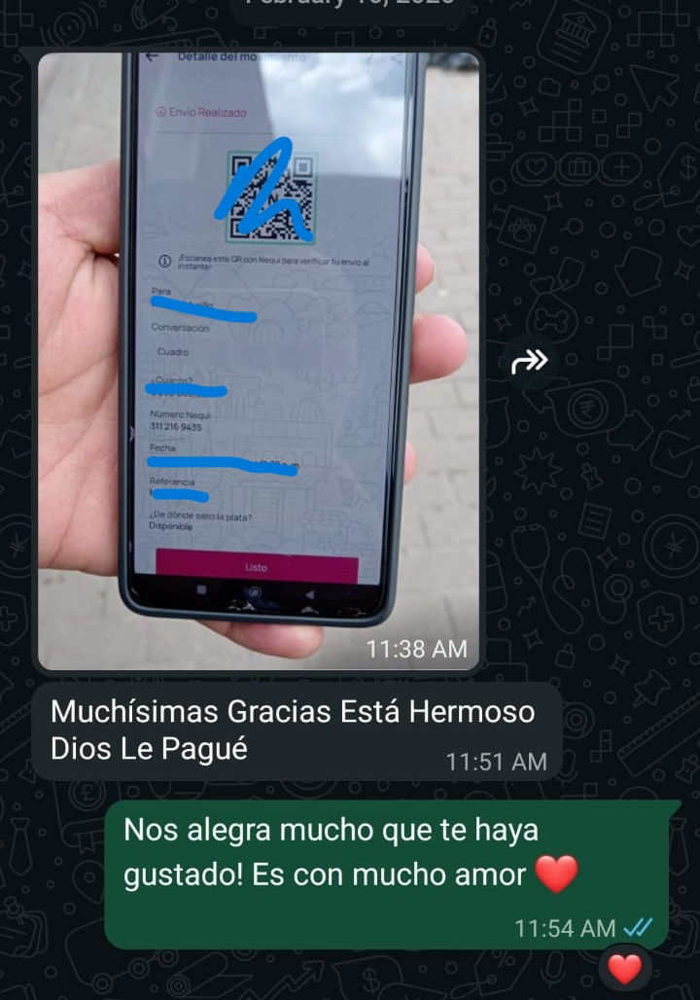

Mensajes reales recibidos de familias que confiaron en nosotros.
Con tu cuadro Familia Real tendrás todo esto, reunido en un solo recuerdo.
Cada elemento se prepara por separado y después lo ensamblamos cuidadosamente para contar, en una sola pieza, la historia de sus primeros días.
Su manito y su piecito en 3D
creados a partir de sus fotografías.
Su nombre y datos de nacimiento en relieve
para recordar no solo cómo se veía, sino cómo comenzó todo.
Impresión fotográfica HD
con su fotografía integrada al diseño.
Espacios para sus primeros recuerdos, si quieres incluirlos
sin tener que enviarlos ni separarte de ellos.
Quizá esa etapa esté ocurriendo ahora. Quizá ya viva en tus fotografías.
Si tu bebé todavía es pequeño, puedes conservar este momento mientras lo estás viviendo. Y si ya ha crecido, una buena fotografía puede ayudarnos a transformar parte de esa etapa en un recuerdo que puedas volver a ver todos los días.
El tiempo pasa. Los recuerdos pueden quedarse.
Ahora imagina el de tu bebé.
Su nombre. Su foto. Sus colores. Su personaje. Sus recuerdos. Su manito y su piecito.
Diseñar el de mi bebéDiseñarlo es gratis. Puedes verlo antes de decidir y todavía no tienes que pagar.